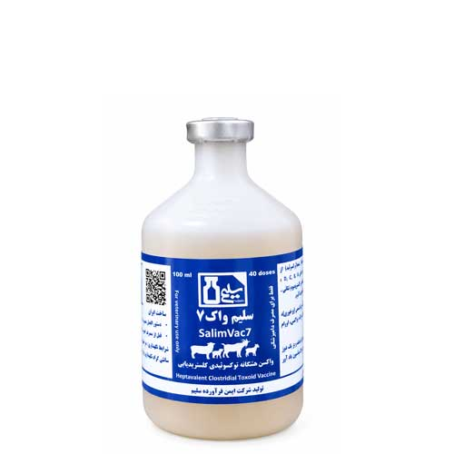

واکسن هفت گانه توکسوئیدی کلستریدیایی
📝نوع و شکل واکسن:
ویال واکسن توکسوئیدی بصورت سوسپانسیون مایع تزریقی
📝ترکیبات واکسن:
این واکسن از توکسین غیرفعال (توکسوئید) باکتری های بی هوازی کلستریدیوم پرفرنژنس تیپ های D, C, B, A، کلستریدیوم تتانی، کلستریدیوم نووی تیپB، کلستریدیوم سپتیکوم همراه با فرمالین (بعنوان غیر فعال کننده) و ادجوانت آلوم تشکیل شده است.
📝هر دوز (2.5 میلی لیتر) حاوی:
توکسوئید بتا کلستریدیوم پرفرنژنس تیپ 10IU<……………………………C,B
توکسوئید اپسیلون کلستریدیوم پرفرنژنس تیپ 5IU<……………………………D,B
توکسوئید آلفا کلستریدیوم پرفرنژنس تیپ 1IU<……………………………D,C,B,A
توکسوئید آلفا کلستریدیوم نووی تیپ 3.5IU<……………………………B
توکسوئید آلفا کلستریدیوم سپتیکوم ……………………………>2.5IU
توکسوئید تتانوتوکسین کلستریدیوم تتانی ……………………………>2.5IU
* واحدهای بین المللی (میزان آنتی سرم در هر 1 میلی لیتر سرم)
📝مصارف واکسن:
واکسن توکسوئیدی هفت گانه کلستریدیایی(کلستریدیوم پرفرنژنس تیپ های D, C, B, A، کلستریدیوم تتانی، کلستریدیوم نووی تیپB، کلستریدیوم سپتیکوم) به منظور پیشگیری از بیماری های آنتروتوکسمی(پرخوری), اسهال خونی بره ها، استراک، براکسی، اورام بدخیم ، قانقاریای عفونی کبد و کزاز مصرف می شود.
📝خصوصیات محصول:
این واکسن حاصل تبدیل آنتی ژن های سموم خارج سلولی پاتوژن های مذکور به توکسوئید است که در یک فرمولاسیون مناسب با ادجوانت همراه شده است. با این فرمولاسیون، واکسن می تواند سطوح بالایی از آنتی بادی های مخصوص هر باکتری و همچنین مقادیر زیادی آنتی توکسین را در حیوان واکسینه ایجاد نموده و او را در مقابل این بیماری ها مصون نماید. با این فرمولاسیون، واکسن می تواند سطوح بالایی از آنتی بادی های مخصوص هر باکتری و همچنین مقادیر زیادی آنتی توکسین را در حیوان واکسینه ایجاد نموده و او را در مقابل این بیماری ها مصون نماید..
بنابراین سلیم واک-7 را می توان یک محصول مناسب برای کنترل انواع مختلف بیماری های مرتبط به کلستریدیوم های موجود در این واکسن برشمرد که حیوان را برای شرایط خاص واکسینه کرده و از بروز بیماری ممانعت می نماید. شرایطی که دام های غیر واکسینه در آن به این بیماری های خطرناک مبتلا و تلف می شوند مانند تغییرات ناگهانی در رژیم غذایی، انرژی اضافی در غذای دام، درمان های طولانی مدت با آنتی بیوتیک ها و سایر شرایطی که باعث تغییر ناگهانی در فلور طبیعی روده حیوان گردیده و یا شرایط را برای تولید توکسین در کبد فراهم می کنند.
📝روش مصرف:
تزریق واکسن به صورت زیرجلدی در ناحیه کتف و گردن گوسفند و بز
واکسن می بایست تا زمان مصرف در دمای بین 2+ تا 8+ درجه سانتیگراد نگهداری شود. واکسیناسیون بهتر است در دمای 15-25 درجه سانتی گراد انجام شود.
قبل و حین مصرف ویال واکسن را تکان دهید.
📝مقدار مصرف:
گوسفند و بز: برای حیوان بالغ 2.5 میلی لیتر و برای بره و بزغاله یک میلی لیتر استفاده شود.
📝پیشنهاد برنامه واکسیناسیون:
برای حیواناتی که تا کنون واکسن دریافت نکرده اند قبل از تغییر رژیم غذایی واکسن اول را دریافت نموده و 15-30 روز بعد مجدداً واکسینه شوند.
واکسیناسیون تقویتی: حیواناتی که قبلا واکسن دریافت کرده اند هر 6-12 ماه یکبار واکسن یادآور را با همان میزان و روش دریافت نمایند. برای مناطقی که بیماری شیوع بالایی دارد واکسیناسیون هر شش ماه یکبار توصیه می گردد. زمان انجام واکسیناسیون در ابتدای بهار و پاییز است.
وقتی بیماری در بره ها و بزغاله ها اتفاق می افتد بهتر است تا دو هفتگی با سرم هایپرایمن به همراه توکسوئید درمان و واکسینه شوند و ۴ هفته بعد تزریق توکسوئید تکرار شود. برای ایجاد ایمنی مادری در آغوز بهتر است مادران در نیمه دوم دوره آبستنی مورد واکسیناسیون قرار گیرند و بره در هفته اول بعد از تولد فقط با آغوز تغذیه شود در این صورت ایمنی در بره تا سه ماهگی می تواند از او محافظت نماید. بره ها و بزغاله ها وقتی از مادرانی به دنیا آمده اند که واکسن دریافت نموده اند و از آغوز مادر در هفته اول تولد، بهره مند بوده اند بهتر است واکسیناسیون یک تا سه ماه بعد از تولد صورت پذیرد. بره هایی که برای پرواربندی استفاده می شود بهتر است در ابتدای دوره پرواربندی واکسن را دریافت نمایند. در گله هایی که بیماری بروز کرده است بهتر است تمام گله بلافاصله بصورت اورژانسی واکسینه شوند و 8-10 روز بعد واکسیناسیون مجدد صورت پذیرد.
📝توصیه ها و احتیاط های لازم:
این واکسن فقط برای مصرف دامپزشکی تهیه شده و می بایست مطابق قوانین سازمان دامپزشکی کشور مورد استفاده قرار گیرد. از تزریق واکسن به دام های ضعیف و بیمار مخصوصا تبدار و یا واجد بیماری های نقص ایمنی خودداری نمایید. برای مدیریت بهداشتی گله بهتر است تمام حیوانات سالم گله بصورت همزمان واکسینه شوند. تجویز واکسن در بزهای آبستن که دو هفته تا زایمان بیشتر فاصله ندارند بعلت استرس واکسیناسیون احتمال سقط دارد و توصیه نمی گردد.
حداقل دو ساعت قبل و تا یکروز بعد از انجام واکسیناسیون دام ها را نباید جابجا نموده و حرکت داد. بهتر است انجام واکسیناسیون بعد از ظهر و قبل از استراحت دام صورت پذیرد.
به منظور حفظ یکنواختی، بطری حاوی واکسن را قبل و در حین استفاده به آرامی تکان دهید.
شرایط مناسب نگهداری واکسن بین دمای ۸-۲ درجه سانتیگراد(دمای یخچال) بوده از یخ زدگی واکسن و یا قرار دادن آن در معرض گرما اجتناب شود. درصورت یخ زدن واکسن و یا قرارگرفتن در دمای بالا از مصرف آن خودداری نمایید. در صورت تزریق تصادفی به انسان، محل را شسته و فرد مذکور به سرعت با در دست داشتن مشخصات دارو به مراکز درمانی منتقل شود. چنانچه محتویات واکسن با پوست و یا چشم برخورد نمود به سرعت محل مورد نظر را با آب فراوان شسته و در صورت بروز نشانه های آلرژی به پزشک مراجعه کنید.اگر محتویات ویال واکسن توسط فردی بلع گردد می بایست هرچه سریعتر فرد مورد نظر بهمراه بروشور واکسن به بیمارستان منتقل و در بخش مسمومیت مورد درمان قرار گیرد. چنانچه محتویات واکسن با پوست و یا چشم برخورد نمود به سرعت محل مورد نظر را با آب فراوان شسته و در صورت بروز نشانه های آلرژی به پزشک مراجعه کنید.اگر محتویات ویال واکسن توسط فردی بلع گردد می بایست هرچه سریعتر فرد مورد نظر بهمراه بروشور واکسن به بیمارستان منتقل و در بخش مسمومیت مورد درمان قرار گیرد.
تمام ویال واکسن باید در زمان واکسیناسیون استفاده شود و از مصرف باقیمانده آن اجتناب شود.
در طول واکسیناسیون، بطری واکسن را داخل ظرف یخ و یا حمام یخ قرار دهید.
از مصرف بیش از حد دوز واکسن بدون تجویز دامپزشک خودداری کنید.
تزریق واکسن بعد از اتمام تاریخ انقضای آن توصیه نمی گردد بطری، سرنگ ها و سر سوزن های استفاده شده در زباله های مخصوص امحاء شده و از ریختن آنها در زباله های خانگی پرهیز شود.
اگرچه از شیر حیوان واکسینه شده می توان استفاده کرد اما تا 3 هفته پس از واکسیناسیون بهتر است دام کشتار نشود و از مصرف گوشت آن اجتناب گردد.
📝عوارض جانبی:
در موارد نادر واکسیناسیون ممکن است باعث بروز علائم و واکنشهای ازدیاد حساسیت آنافیلاکتیک و الرژی در حیوان حساس شود. در صورت مشاهده این علائم از ترکیبات آنتی هیستامینی استفاده نموده و با دکتر دامپزشک مشورت نمایید.
📝نحوه حذف باقی مانده و بطری واکسن :
کلیه وسایل و مواد یکبار مصرف مورد استفاده و بطری خالی واکسن در پلاستیک و یا ظروف مخصوص قرار داده شود و متناسب با نوع وسیله معدوم سازی شامل اتوکلاو ، سوزاندن ، استفاده از مواد شیمیایی مناسب و یا دفن بهداشتی انجام داده شود.
📝تداخلات دارویی:
از مصرف داروهایی که سیستم ایمنی را تضعیف می کنند همزمان با واکسیناسیون خودداری کنید. این واکسن هیچ گونه تداخلی با سایر ترکیبات دارویی ندارد. تصمیم گیری در مورد استفاده از دیگر ترکیبات بیولوژیک داروئی، قبل و بعد از این واکسن با نظر دکتر دامپزشک انجام شود اما از مخلوط کردن این واکسن با دیگر ترکیبات داروئی اکیدا پرهیز شود.
📝شرایط نگهداری، ذخیره سازی و حمل و نقل:
در جای تاریک و خنک( دمای 2 تا 8 درجه سانتی گراد ) نگهداری شده و از یخ زدگی واکسن جلوگیری شود.
📝نوع بسته بندی:
هر 40 دوز واکسن در یک ویال 100 سی سی عرضه شده است. هر کارتن حاوی 24 ویال 100 سی سی می باشد.